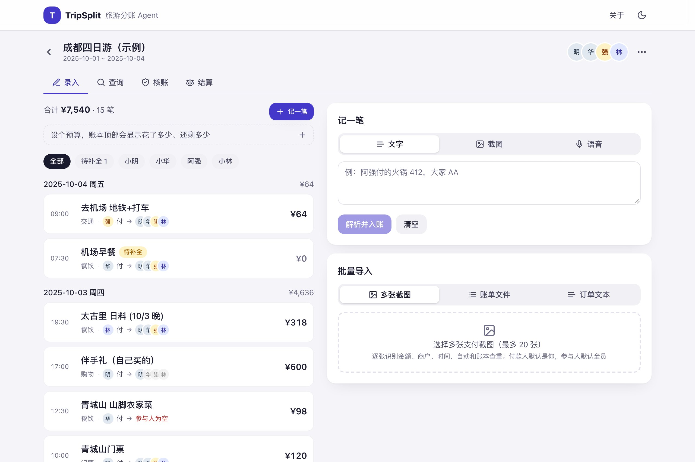
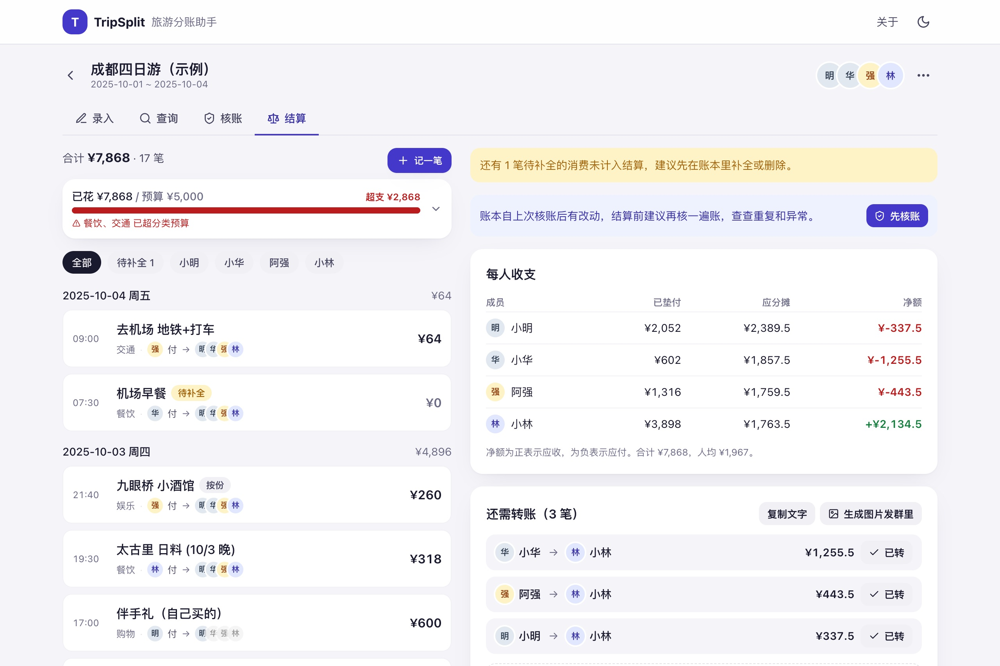

TripSplit 旅游分账 Agent
一句话、一张支付截图或一段语音就能记一笔；账目由只读的核账 Agent 查重、查漏、查异常，修改建议逐条由用户确认；最后给出最少转账的结算方案。开启云同步后，同行的人各自用手机记账，账目实时合并。

点击后在窗口内加载真实应用，自带一本埋了 5 处异常的示例账本。新窗口打开 ↗


项目背景
几个人结伴自由行，钱是轮流垫的：有人订酒店，有人付门票，吃饭谁手快谁扫码。消费散在每个人的支付宝、微信账单和记忆里，回来结算时靠翻聊天记录核对，漏记、同一顿记两次、参与人记错（请客的人被算成分摊、没去的人被算进去）都很常见。
麻烦的不是最后怎么算，而是前面记不全、核不清：记得不全，算得再准也没用。TripSplit 的切口就是把记录成本和核对成本都压下来，"算"反而是最简单的一步。
痛点拆解与产品边界
| 成本 | 具体表现 | 产品回答 |
|---|---|---|
| 记录成本 | 每笔要填金额、谁付、谁参与、分类、时间，手机上打字麻烦，于是攒到最后一起补，越补越不准 | 多模态录入：一句话、一张支付截图、一段语音；模型抽字段并给置信度，够准就直接入账，不够就只追问缺的那一项 |
| 核对成本 | 重复录入、参与人为空、付款人不在参与人里、疑似多打一个零、日期不在行程内，人眼很难在几十笔里找出来 | 核账 Agent 用只读工具逐项核查，每条结论引用具体证据，修改建议做成字段级预览让用户确认 |
| 信任成本 | 如果 AI 能直接改账，用户不敢把账交给它 | 硬边界：Agent 只读账目、只提建议；所有修改经用户确认由客户端写入并留审计记录；AI 接口只返回建议 |
判断：产品不能只算末端的分账，要覆盖旅中录入、账目沉淀、结算前核账和最终结算，主链路定为"录入 → 账本 → 核账 → 结算"。
需求分析与优先级
目标用户是 2–8 人自由行里负责记账的"管账人"，目标是单笔消费 ≤10 秒入账。PRD 先梳理用户动线"创建旅行 → 消费录入 → 账本管理 → 核账 → 结算"，对每一页写页面交互、业务规则、异常处理与验收标准，共 14 类异常处理、19 条验收标准。MVP 只保留四件事：
- 多模态录入：文字 / 截图 / 语音统一抽取金额、付款人、参与人，按置信度与字段完整性决定自动入账或追问补全。
- 历史账目检索与报告：模糊描述 → 结构化条件（日期、金额、成员）+ 文本相似度检索；回答带证据引用与修改预览。
- 核账 Agent：提示词封装 → 模型 Planning → 只读工具调用 → 结果回传 → 结构化输出。
- 结算：每人已付 / 应摊 / 净额，贪心最少转账方案。
MVP 阶段把云同步、多币种、平台直连列为非目标；第二期补齐 10 项：云同步（分账产品的核心是每个人用自己手机记）、分摊规则与请客、多币种、预算与趋势、还款跟踪与锁账、分享与导出、截图批量与账单导入、服务端语音与离线队列、Agent 规则记忆、评测与可观测。全部已在第二期完成，见下文。
方案产出
哪里用 Agent，哪里不用
录入是固定流程：抽字段、看置信度，再决定自动入账、追问或待补全，结构化输出加规则就够，不需要 Agent。核账要查什么事先不固定，才用 Agent：只配 7 个只读工具，结论附证据，改账先展示字段差异、由用户确认；分摊与结算由代码完成。
录入决策
模型对每个关键字段输出值和置信度：输入里明确写出的给 0.9 以上，靠推断的（截图没写谁付、默认当前使用者）给 0.6–0.8，猜的填 null。服务端按阈值（金额 0.8、付款人 0.7、参与人 0.7）和字段完整性判定：三项都过线自动入账；任一缺失进入追问，只问缺的那一项；不是消费的输入（闲聊、风景照）直接拒绝并说明原因。追问后的补充回答作为最高优先级修正上一轮结果。
检索与修改预览
两段式：先把"第一天晚上那顿火锅是谁付的"解析成日期区间、金额、成员、分类、关键词和意图（找账 / 改账 / 统计），硬过滤后用字符二元组 TF-IDF 按文本相似度排序取前 8 条；过滤为空时自动放宽为纯文本相似度检索并标注。再基于候选作答，引用只能是候选里的 id；用户要求修改时给出字段级 before → after 预览，确认后才写入。
核账 Agent
系统提示词要求先写核查计划再调工具；工具集全部是账本快照上的纯函数：列账、取单笔、查重（时间窗 + 金额容差）、规则体检（参与人为空、付款人不在参与人内、非成员、待补全、零金额、低置信度、日期超出行程）、分类统计、结算预览。结束方式只有一种：调用 strict 结构的 submit_findings，每条发现带严重度、类型、证据、建议和可选的修改建议。发现卡默认折叠，展开看证据和涉及账目；高危建议可一键接受。用户点忽略时可写理由，落为"本次旅行规则"或"长期习惯"喂回模型，下次不再报同类情况。
结算
分摊支持均摊、按份数、按比例、指定金额和请客（付款人不分摊）；外币按消费日汇率折算到本币；分到分，余数归最后一位参与人，保证合计守恒。转账方案按净额贪心配对，笔数不超过人数减一；每笔可标记已转，剩余方案按扣除已转后的净额重算，全部结清后可锁定账本。
开发上线与项目管理
- 边界落在架构上：浏览器 localStorage 持有全部账本；四个 AI 接口只接收账本快照、只返回建议，没有写接口。云同步是唯一的服务端写路径，且只搬运用户已确认的账目，账目按最后写入胜合并、删除为墓碑。
- 结构化输出：录入、检索、报告走 zod 结构化输出；核账是手写 agent loop，只读工具与 submit_findings 都用 strict 模式，处理拒答、截断、无工具调用等异常停止原因，最多 12 轮。
- 可观测：每次模型调用记录路由、耗时、输入输出 token、成本估算与成功与否；运营后台按路由看 p50 / p90、成功率和成本，并保存评测历史。
- 验收：纯函数单测共 47 条断言，其中 22 条覆盖分摊与结算规则（均摊到分且合计相等、按份数 / 比例 / 指定金额、外币折算、请客不分摊、标记已转后的剩余方案、转账笔数不超过人数减一），其余覆盖录入决策阈值与检索；PRD 附验收标准清单；发布前固定跑类型检查、lint、构建与单测。
- 模型选型：录入解析按评测结果换成 sonnet；核账、检索、报告没做过同样的评测，模型保持不变。
- 发布：GitHub 公开仓库，推送即由 Vercel 自动部署；数据库用 Turso（libsql），语音识别走 Whisper 兼容接口，未配置时自动退回本机模式。
评测
| 项目 | 方法 | 结果 |
|---|---|---|
| 录入解析 | 构造评测集从 20 例扩到 100 例，按 30 类表达方式打标；7 个字段维度：入账决策、金额、付款人、参与人、分类、请客、币种，一例全部字段都对才算通过 | sonnet 基线通过率 90%；10 例失败中 5 例是"请客"语义 |
| 一轮迭代 | 定位到提示词里的请客规则只覆盖显式句式；只改提示词，补全隐含说法和默认被请范围 | sonnet 90% → 97%，opus 92% → 96%，haiku 84% → 88%；原 20 例无回退 |
| 模型选型 | 同一份评测集、同一提示词横评三档模型，同时记单条成本和耗时 | sonnet 97%、1.3 美分、1.7 秒；opus 96%、6.9 美分、2.8 秒；录入解析选 sonnet |
| 规则层 | 分摊、结算等纯函数的断言单测 | 47 条全过，其中 22 条覆盖分摊与结算 |
| 核账 Agent | 示例账本故意埋 5 处异常：重复录入、付款人不在参与人内、参与人为空、疑似多打一个零、待补全 | 5 / 5 全部查出，每条结论引用具体金额与时间差 |
| 线上响应 | 生产环境实测 | 检索约 6 秒，核账约 30 秒 |
结果与迭代
| 版本 | 内容 |
|---|---|
| v1 | 多模态录入、检索与报告、核账 Agent、最少转账结算；PRD 与验收标准 |
| 界面改版 | 头部压缩与头像圈、手机底部 tab、首页总览、账目卡瘦身、核账摘要与折叠卡、按住说话、空状态 / 骨架屏 / 深色模式、桌面双栏 |
| v2 | 云同步与邀请链接、分摊规则与请客、多币种汇率、预算与趋势、还款跟踪与锁账、图片 / CSV / PDF 导出、截图批量与账单 / 订单导入、服务端语音与离线队列、Agent 规则记忆与结算前自动核账、评测集与运营后台 |
| 评测迭代 | 录入评测集 20 → 100 例、三档模型横评；补全请客规则后通过率 90% → 97%，录入解析换成 sonnet |
明确未做的边界
- 不做账号体系：云同步以分享码为凭证，拿到链接的人都能读写，适合熟人小团体。
- 不接邮箱与平台账号：订单导入以粘贴文本和账单 CSV 为落地方式，草稿必须人工确认。
- Agent 永远不直接改账：这是产品承诺，也是技术事实：核账 Agent 只有只读工具，AI 接口只返回建议。
技术
Next.js 16、React 19、TypeScript、Tailwind CSS 4、zod；Anthropic SDK（结构化输出、strict 工具、手写 agent loop、提示词缓存）；libsql / Turso；Whisper 兼容语音接口；frankfurter 汇率；Vercel 部署。借助 Claude Code 独立完成产品与全栈开发。